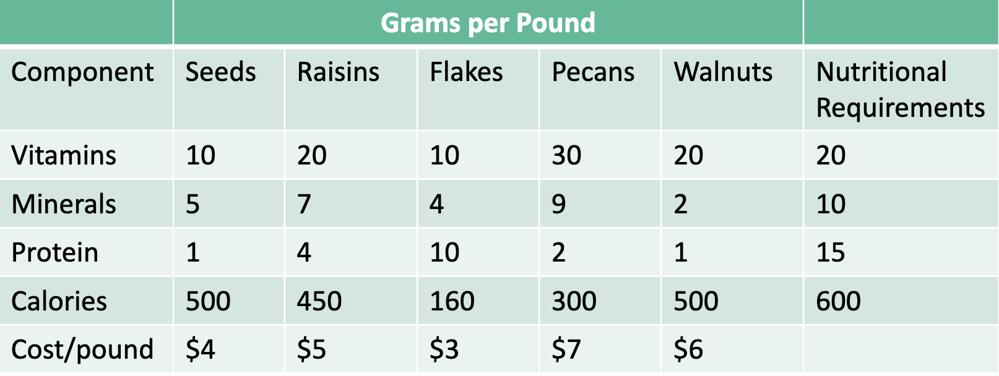

Dahlby Outfitters wants to introduce a new trail mix. Each ingredient contain amounts of vitamins, minerals, proteins, and calories (must contain at least the amount shown in table). Product needs to have certain minimal nutritional profile. Want to find the optimal mix that minimizes cost.

Figure 1: Example Information
Code
from gurobipy import Model, GRBm = Model("Nutrition Example")# Create variabless = m.addVar(vtype=GRB.CONTINUOUS, lb=0, name="seeds")r = m.addVar(vtype=GRB.CONTINUOUS, lb=0, name="raisins")f = m.addVar(vtype=GRB.CONTINUOUS, lb=0, name="flakes")p = m.addVar(vtype=GRB.CONTINUOUS, lb=0, name="pecans")w = m.addVar(vtype=GRB.CONTINUOUS, lb=0, name="walnuts")# Add constraintsm.addConstr(10* s +20* r +10* f +30* p +20* w >=20, "Vitamins")m.addConstr(5* s +7* r +4* f +9* p +2* w >=10, "Minerals")m.addConstr(1* s +4* r +10* f +2* p +1* w >=15, "Protein")m.addConstr(500* s +450* r +160* f +300* p +500* w >=600, "Calories")# Set objectivem.setObjective(4* s +5* r +3* f +7* p +6* w, GRB.MINIMIZE)m.optimize()for v in m.getVars():print(f"{v.varName}{v.x}")print(f"Obj: {m.objVal}")
Restricted license - for non-production use only - expires 2025-11-24
Gurobi Optimizer version 11.0.0 build v11.0.0rc2 (mac64[arm] - Darwin 23.2.0 23C71)
CPU model: Apple M2 Pro
Thread count: 12 physical cores, 12 logical processors, using up to 12 threads
Optimize a model with 4 rows, 5 columns and 20 nonzeros
Model fingerprint: 0xbd9b0c7e
Coefficient statistics:
Matrix range [1e+00, 5e+02]
Objective range [3e+00, 7e+00]
Bounds range [0e+00, 0e+00]
RHS range [1e+01, 6e+02]
Presolve time: 0.00s
Presolved: 4 rows, 5 columns, 20 nonzeros
Iteration Objective Primal Inf. Dual Inf. Time
0 0.0000000e+00 9.250000e+01 0.000000e+00 0s
3 7.5357995e+00 0.000000e+00 0.000000e+00 0s
Solved in 3 iterations and 0.00 seconds (0.00 work units)
Optimal objective 7.535799523e+00
seeds 0.47732696897374705
raisins 0.33412887828162285
flakes 1.3186157517899761
pecans 0.0
walnuts 0.0
Obj: 7.535799522673031
2 Binding Constraints and Sensitivity
A constraint is binding if the LHS of a constraint equals the RHS of the constraint. We can get this from Gurobi which labels these constraints as slack–the difference between the LHS and RHS:
Code
for c in m.getConstrs():print(f"{c.ConstrName}: {c.Slack}")
How sensitive is the solution to changes in the parameter values in the constraints? This is referred to as shadow price.
How sensitive is the solution to changes in the coefficients in the objective function? This is referred to as reduced cost.
3 Shadow Price
In our previous furniture example, we had two binding constraints: fabrication and table demand.
We want to see what happens when we incrase fabrication by 1 hour, keeping all else constant.
The original fabrication is 1850 and the objective value is 8400. If we increase fabrication by 1 then the objective value is now 8404. As we increase fabrication by 1 hour then we will see a increase in profit by $4.
If we were to change a constraint that is not binding, then our objective value does not change.
The shadow price of a constraint indicates the amount by which the objective function value changes givena unit increase or decrease in the RHS of the constraint, assuming all other parameters remain constant. Shadow prices only hold for linear optimizations and are always zero for nonbinding constraints.
3.1 Slack vs. Pi in Python
If a constraint is binding (RHS = LHS), then the slack for the constraint is 0. Constraints with nonbinding constraints will have a nonzero value for slack. When the constraint is binding, then Pi will give the shadow price for that constraint.
Code
shadow_prices = m.getAttr("Pi")m.printAttr("Pi")
Constraint Pi
-------------------------
Minerals 0.490453
Protein 0.0560859
Calories 0.00298329
4 Reduced Cost
Reduced cost is the amount by which an objective function coefficient would have to improve (increase for maximization, decrease for minimization) before it would be possible for a corresponding variable to assume a positive value in the optimal solution.
Code
for v in m.getVars():print(f"{v.VarName}: {v.RC}")